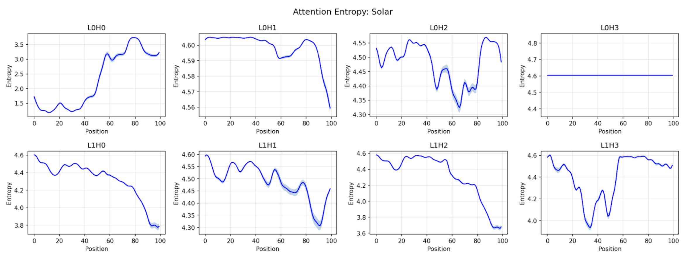
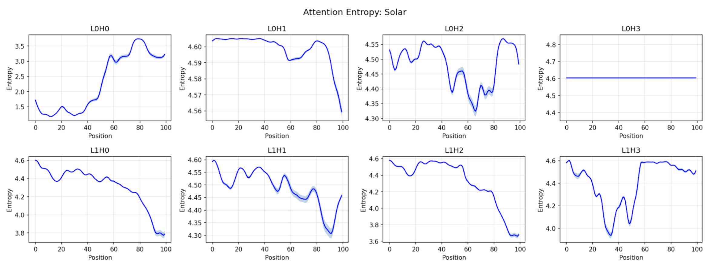

Background and Related Work
There are more transformers being used in time-series forecasting, but whether their attention mechanisms actually learn meaningful temporal structure is less explored. Several recent works directly motivate our study.
Transformers Often Fail to Capture Temporal Dependencies
Zeng et al. (2022) showed that simple linear models (e.g., DLinear) outperform many Transformer variants when trained fairly, arguing that self-attention often fails to discover lag dependencies and instead benefits from dataset or training biases. This raises the key question driving our work: Does attention succeed under certain time-series distributions and fail under others?
Sparse Attention as an Inductive Bias
Informer (Zhou et al., 2021) introduced ProbSparse attention, which selects dominant queries and enforces sparsity—implicitly assuming that only a few past lags matter. This matches classical time-series intuition and may expose temporal structure more clearly than dense attention. Our study inspired by this and set regularization terms carefully for training our Transformer.
Attention Behavior Depends on Statistical Properties of the Data
Recent architectures also highlight challenges between standard self-attention and real temporal dynamics. For example, the Non-Stationary Transformer (Liu et al., 2022) shows that common normalization steps can inadvertently remove distributional shifts, leading to diffuse, high-entropy attention maps, while Autoformer (Wu et al., 2021) demonstrates that self-attention often fails to capture periodic structure, requiring an alternative auto-correlation mechanism. Together, these findings indicate that properties such as stationarity, volatility clustering, jumps, and regime changes can fundamentally shape how attention behaves.
Why Our Work Fills a Gap
Most prior work on time-series Transformers focuses on forecasting accuracy or architectural improvements, rather than examining how attention behaves under different statistical regimes. Very few studies ask whether attention meaningfully reflects temporal structure when the underlying data come with properties hard to capture.
Our project fills this gap by constructing a controlled univariate synthetic benchmark spanning these distributions and training both dense and sparse (ProbSparse) Transformers under identical conditions. We analyze attention using entropy, sparsity, and pattern-detection metrics to quantify how statistical properties shape learned dependencies. This allows us to directly connect attention patterns to data-generating processes, revealing when attention is informative and provide guidance on further data preprocessing on real data.


 
